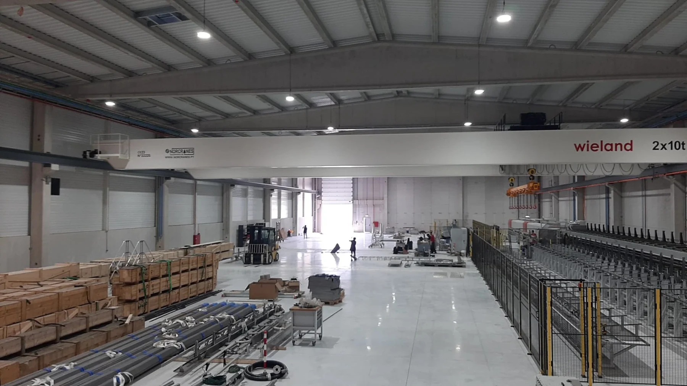

Ler a obra por espaços.
Exterior, produção e escritórios têm uma imagem própria. A alternância dá uma sequência ao caso e mantém o visitante dentro da mesma obra.
Engenharia e construção · Wieland, Esposende
Da área de produção aos escritórios, uma leitura dos diferentes espaços da unidade industrial apresentada no portefólio Atlântinível.
Explorar a demonstração
Obra em foco · Wieland
A página oficial identifica esta unidade industrial como terminada. Aqui, a galeria organiza as imagens de exterior, produção e escritórios.
A operação
A fonte oficial descreve uma área de produção de cerca de 2 750 m², numa solução construtiva e estrutural em pré-fabricado de betão.
O caso mostra uma obra realizada. Para iniciar outra conversa, o contexto depende da fase em que se encontra.
Elementos que pode reunir
Lista de preparação, sem avaliação técnica, cálculo de custos ou envio de pedido.
Uma proposta de Ricardo Almeida
A vossa página da Wieland já reúne fotografias e características construtivas. Nesta demonstração, organizei a leitura por espaços e acrescentei uma preparação de contacto que muda com a fase do projeto.
Esta é uma demonstração independente, preparada para mostrar uma possibilidade de apresentação. O website oficial permanece a referência da empresa.
Exterior, produção e escritórios têm uma imagem própria. A alternância dá uma sequência ao caso e mantém o visitante dentro da mesma obra.
Localização, áreas publicadas e solução em pré-fabricado de betão ficam junto do caso. Cada dado mantém a relação com a obra a que pertence.
Quem ainda define necessidades vê uma lista diferente de quem já tem projeto. A ferramenta ajuda a organizar contexto; não estima custos nem decide uma solução de engenharia.
Uma filmagem a preparar convosco
Proponho acompanhar uma obra autorizada para filmar uma etapa de execução e a respetiva conferência, com uma explicação de quem está no terreno. Esse conteúdo poderia ficar junto das características do caso, mostrando o que a equipa faz para passar do projeto à construção. A intervenção e os elementos técnicos divulgáveis seriam definidos convosco.
Na Canvas Custom Furniture, fiz a filmagem, a edição e a integração do filme no website. Incluí esse projeto como exemplo concreto da ligação entre conteúdo e página.
Ver o projeto Canvas